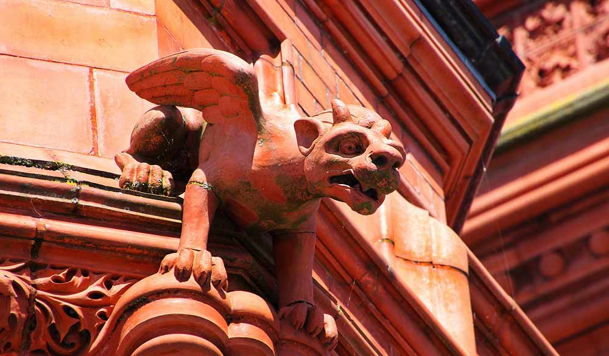

Mythical Chimeras
Depending on the culture, chimeras can represent different mystical forces, from benevolent protector to devouring monster. The name-sake Greek Chimera was of the latter category. Chimeras from a variety of cultures figure heavily in Western literature and art. Most westerners are familiar the following: gargoyle, griffin, centaur, sphynx, pegasus, and mermaid. Some Asian examples include the Japanese Ushi-Oni, an ox-demon with a crablike body and tusks; the half bird Kinnari from South and Southeast Asia; and the Hindu man-lion called Narasimha.
